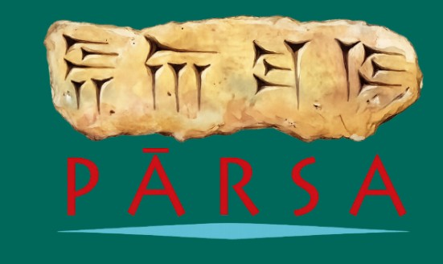
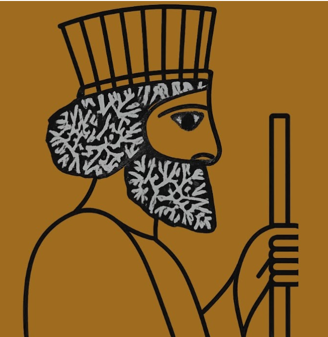

Grupo de Estudos Aquemênidas

O Pārsa, Grupo de Estudos Aquemênidas, é coordenado pelo professor Matheus Treuk (UERJ) e existe desde 2023, quando foi criado na Universidade de São Paulo (USP).
O grupo promove reuniões regulares entre pesquisadores brasileiros e outros centros de pesquisa, acompanhando produção nacional e estrangeira e convidando especialistas externos para apresentações.
Somos dedicados à promoção de encontros, discussão de pesquisas, leituras e fortalecimento da integração acadêmica nacional e internacional.
Caso deseje receber as atualizações do grupo, basta escrever para:
Organizadores: Dr. Matheus Treuk e Ms. Carlos Augusto Lima Barros
Founded in 2023, in Brazil, under the coordination of Matheus Treuk (FAPESP Grant 23/01822-6 and 22/07801-8), the "Pārsa - Achaemenid Studies Group" aims to bring together researchers interested in studying Achaemenid Persia (c. 550–330 BC) and all the diverse societies and political entities related to the Achaemenid Persian Empire.
This includes the empire's provinces, neighboring political and communal entities, and prior or subsequent societies that contribute to a diachronic understanding of the Persian Empire.
Through regular meetings, members discuss aspects of their research related to the Persian Empire and its sphere of influence. Current research on Achaemenid Persia, particularly those conducted by its members, is discussed in seminar format.
The objectives of Pārsa include: